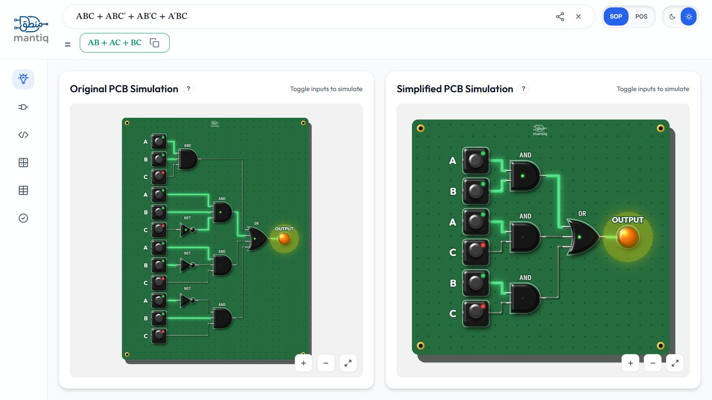
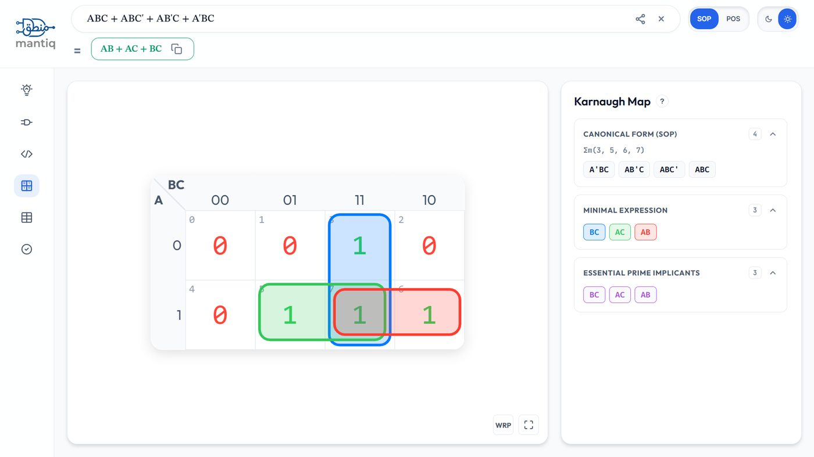
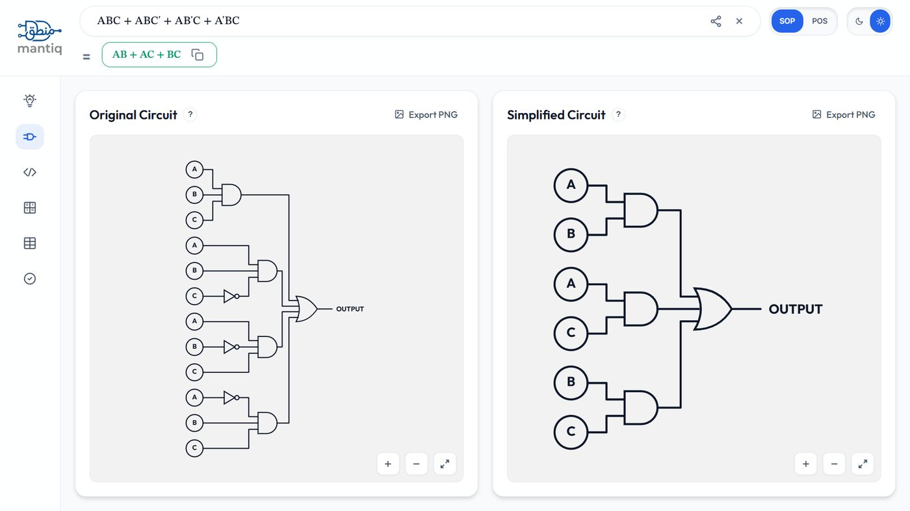
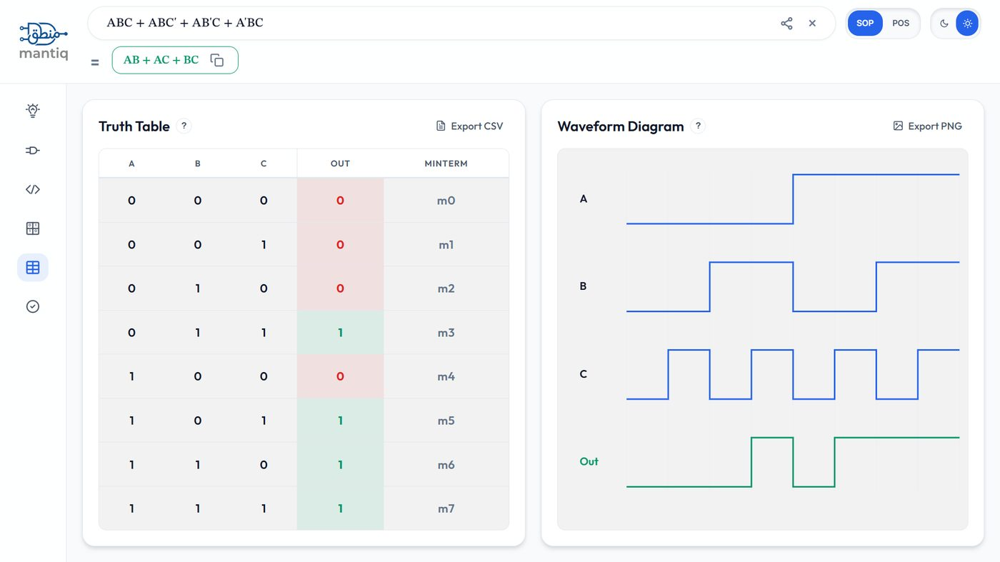
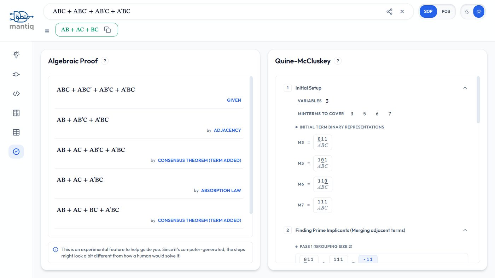
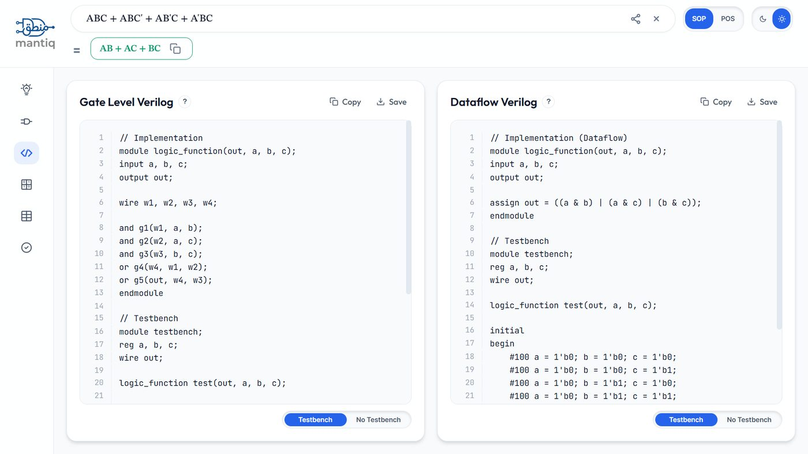

Simulation
Toggle inputs on an interactive PCB-style board and watch signal states and the output LED update live, propagated through the real gate network.
A free, offline-capable logic workbench: type an expression and get a simplified result, a step-by-step proof, a Karnaugh map, a truth table, a live circuit simulation, and Verilog, all in your browser.
What's Mantiq?
Type a Boolean expression, a minterm list, or a K-Map size, and get a minimized SOP/POS result, a step-by-step proof, a Karnaugh map, a truth table, a live simulated circuit, and exportable Verilog, computed instantly and entirely on your own device.
What you can do
These are the exact tabs in Mantiq's sidebar. Every one of them reads from the same simplification engine, so your proof, map, circuit, and Verilog never disagree with each other.
Toggle inputs on an interactive PCB-style board and watch signal states and the output LED update live, propagated through the real gate network.
A clean, auto-routed gate-level schematic generated straight from your expression, original and simplified, side by side.
Ready-to-drop-in gate-level or dataflow Verilog HDL, with an optional generated testbench, one click away.
Auto-grouped, colour-coded Karnaugh maps for 2 to 6 variables, with prime implicants and essential groupings called out beside the grid.
Instantly generated truth tables with minterm callouts, plus a waveform diagram showing every signal over time.
A guided algebraic derivation naming the law used at every step, alongside a full Quine-McCluskey walkthrough.
See it in action
No mockups. These are unedited screenshots of Mantiq itself,
solving ABC + ABC' + AB'C + A'BC.
Every input is a physical-looking toggle on a simulated PCB. Flip a switch and the trace glow, gate states, and output LED update instantly, for both the original and the simplified circuit, so you can see exactly what minimization saved you.

Prime implicants are detected and colour-coded directly on the grid, with the canonical form, minimal expression, and essential prime implicants listed right beside it.

No manual wiring. Type an expression and Mantiq lays out the gate-level schematic for you, original and simplified, so the difference is obvious at a glance.

A full truth table with colour-coded output and minterm labels, paired with a waveform diagram that shows how every signal actually behaves over time.

A step-by-step algebraic proof names the exact law applied at each step, Absorption, Consensus, De Morgan's, next to a full Quine-McCluskey breakdown.

Generate clean gate-level or dataflow Verilog straight from your simplified expression, with an optional testbench. Copy it or save it directly.

How it's built
Expression parsing, Quine-McCluskey minimization, proof search, K-map grouping, and Verilog generation are written in C++ and compiled to WebAssembly with Emscripten, running inside a dedicated Web Worker so the interface never freezes, even on large expressions.
The interface itself is dependency-free, framework-free vanilla JavaScript, with
no build step. A service worker precaches the entire app shell, including the
compiled .wasm binary, so after your first visit Mantiq needs the
network for nothing.
Static shell, sidebar, topbar, and views
Vanilla JS for rendering, state, and the PWA install flow
C++ compiled to WebAssembly with Emscripten, inside a Web Worker
Input formats
Standard operator precedence applies: NOT before AND, then XOR, then OR.
Why Mantiq?
An honest look at where Mantiq overlaps with other tools students reach for, and where it does not.
Wolfram|Alpha is a general math engine. Logisim is a full desktop circuit simulator. Mantiq is purpose-built for the Boolean algebra workflow taught in Digital Logic Design courses.
Privacy Policy
No account, no form submissions, no backend. Everything runs client-side in WebAssembly. Mantiq stores only a small local preference for theme and whether you have seen the academic integrity notice, never your logic. This landing page itself sets no cookies and loads no analytics or tracking scripts of any kind.
Mantiq exists to help you check your own working, explore how simplification happens step by step, and build the kind of intuition that only comes from engaging with a concept directly. Typing in a problem and copying out the answer skips the part where the actual learning happens, so please use it as a study aid rather than a substitute for the effort your coursework is meant to require of you.
Terms of Use
Mantiq is provided free of charge, open source under the MIT license, "as is" and without warranty of any kind. You're welcome to use, inspect, fork, and self-host the code, in line with the license terms in the repository.
All computation happens locally in your browser, so there is no account to create, no data submitted to a server, and nothing for Mantiq to be responsible for storing or losing on your behalf. You're responsible for how you use the results, including following your own institution's policy on computational tools, as outlined in the academic integrity note above.
Links to third-party sites (GitHub, LinkedIn, the support page) are provided for convenience; Mantiq isn't responsible for their content or availability.
Contact
Bug reports, feature requests, or just questions about Mantiq, pick whichever channel is easiest.
Support the project
One student builds and maintains every part of this: the simplification engine, the K-Maps, the circuit simulator, the Verilog export, all of it, in spare time, with no ads and no paywall, and none planned. If Mantiq has saved you an assignment's worth of hand-drawn K-maps, a small contribution helps keep it free, fast, and actively improved for the next student who needs it.
Support MantiqQuestions
The essentials before you dive in. Anything else, reach out through the contact section above.
No. All parsing and computation happens locally in your browser through WebAssembly. Mantiq has no backend, no account system, and makes no network requests once the app shell is cached. Your expressions never touch a server.
Yes. After your first visit, a service worker caches everything needed to run Mantiq fully offline, including the WebAssembly engine itself. You can also install it as a PWA straight from your browser's install prompt, or the option in Mantiq's own menu, for a native, home-screen experience.
The Karnaugh map view supports 2 to 6 variables, which covers virtually every DLD and discrete math course. Expression simplification and simulation can handle larger variable counts too, limited mainly by how readable the output stays at that size.
Yes. The share button next to the expression bar copies a direct link to your exact expression and solution. Whoever opens it sees the same result instantly, with nothing to retype.
It is built for coursework, with the emphasis on understanding rather than just getting an answer. Every simplification comes with a step-by-step proof that names the law used at each step, so you can check your own working or see where you went wrong. Please read the academic integrity note above, and always follow your course's specific policy on tools like this.
Nothing. Mantiq is open source under the MIT license, free to use, inspect, fork, and self-host. If it saves you time and you would like to support continued development, you can do so here.
Mantiq is developed by Usama Gulzar, a Computer Science undergraduate at SEECS, NUST. The project is open source on GitHub, and bug reports, feature requests, and pull requests are all welcome.
Open Mantiq, type an expression, and see the whole picture: proof, map, table, circuit, and Verilog, all in one place.